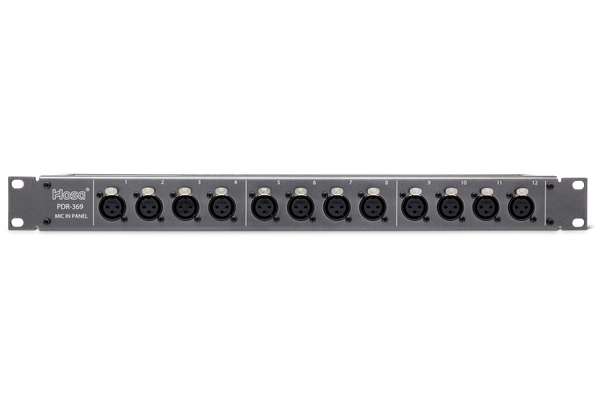
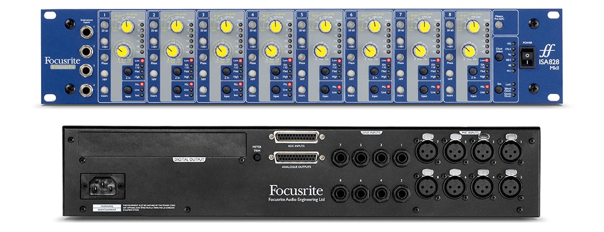
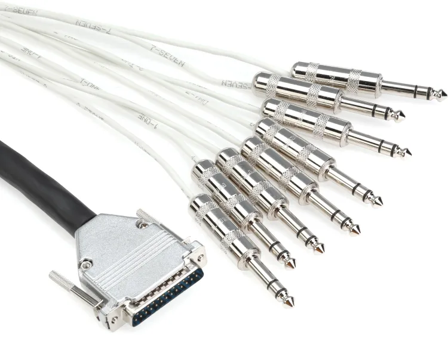
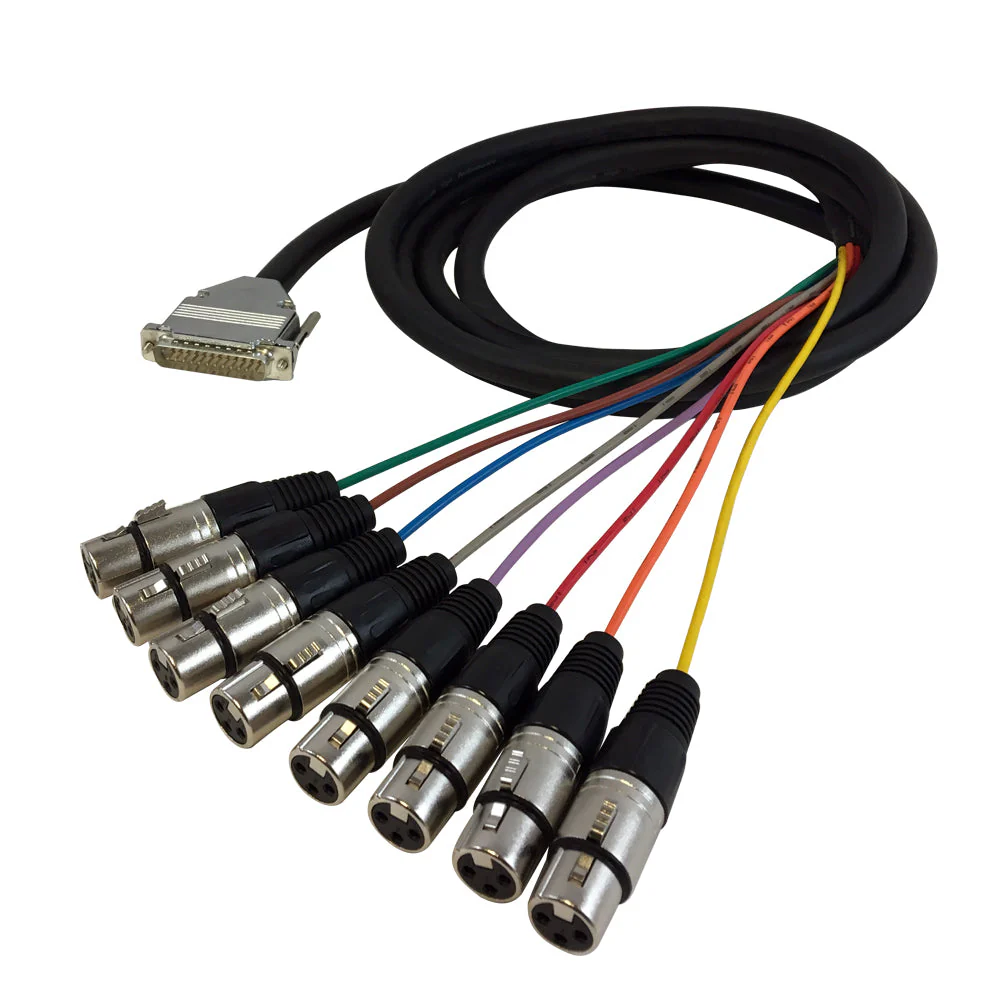
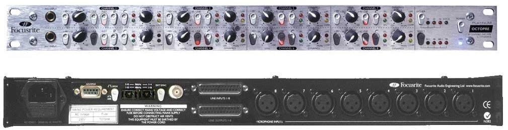
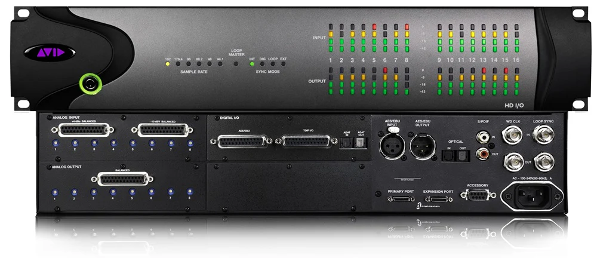
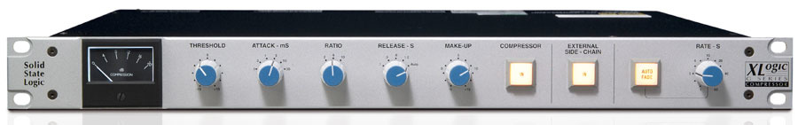
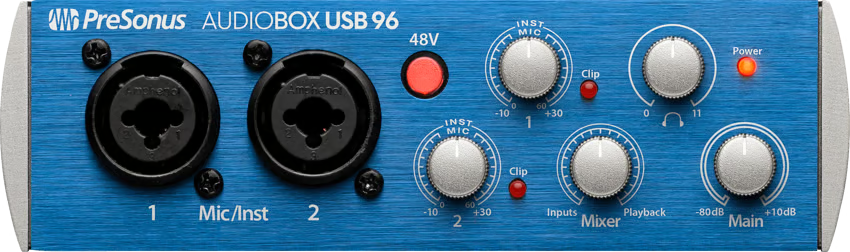

A guide to recording in our studio, MB2508: the gear in each room, how it's wired, a five-part walkthrough that records one vocal mic to a laptop, and comping the takes.
MB2508 has two rooms: the control room (where the engineer sits at the Toft) and the live room (where the band plays, behind the internal door). The cables between them run through the shared wall: mic lines from the live room to the preamps in the control room, and the headphone feed back to the live room.
The live room
One small rack against the wall holds two mic panels, one above the other. The live room also has two headphone stations for the performers.
1. Hosa mic input panel 1 (top, wired to the ISA)

Hosa 16-jack mic input panel. One per preamp; jacks 9-16 unused.
Photo via Hosa Technology.
A Hosa mic panel with 16 XLR female jacks across its front, numbered 1 through 16. Jacks 1-8 are wired through the wall to the ISA's mic inputs 1-8 in the control room (jacks 9-16 are unused). A mic plugged into panel 1 jack N reaches Toft channel N.
2. Hosa mic input panel 2 (bottom, wired to the OctoPre)
Identical to panel 1: 16 XLR female jacks, jacks 1-8 wired through the wall to the OctoPre's mic inputs 1-8 (9-16 unused). A mic plugged into panel 2 jack N reaches Toft channel N+8, so panel 2 jack 1 is Toft channel 9.
The panels are passive. Plug in an XLR cable and the mic is connected; gain, phantom power, and every other preamp control are on the preamps in the control room.
3. Furman HR-6 headphone stations (two)
Performers in the live room wear headphones during tracking so they can hear themselves and the other tracks while playing. Each HR-6 station gets the cue mix from the Furman HDS-6 hub in the control room over Ethernet cable, through the wall. Each station has two headphone jacks, so the two stations take up to four players.
Each station has five level knobs: four for the hub's mono feeds and one for its stereo feed. In this studio only the stereo feed is connected, and it's the cue mix from Toft Aux Master 1 (L) + Aux Master 2 (R). The stereo-feed knob sets how loud the cue is at that station. The four mono knobs have nothing on them.
This is different from a live-sound setup, where each performer's monitor has its own custom mix on its own aux. Sessions in our studio work from one shared cue mix, and each station sets its own level.
The control room
The Toft is on a console desk in the control room. Beside it is a rack with the two preamps. Built into the right end of the desk is a side rack holding the gear the Toft sends to and receives from. A pair of monitor speakers and a subwoofer play the mix into the room.
1. Focusrite ISA 828 MkII (8-channel mic preamp)

Focusrite ISA 828 MkII. First preamp in the control-room preamp rack.
Photo via Focusrite.
A preamp takes a mic-level signal (the small signal a microphone puts out) and raises it to line level (strong enough to run down a long cable to the next device). You met one preamp already, the one inside a basic audio interface. The ISA does the same job in a dedicated 8-channel unit with its own sound, and it feeds Toft channels 1-8.
The mic inputs on the rear are 8 mic-level XLR jacks, one per channel. Each is wired through the wall to the matching jack on Hosa panel 1 in the live room.
The outputs on the rear are 8 line-level outputs on a single DB25 connector, broken out by a fan cable to 8 male XLRs. These run to Toft XLR (MIC) inputs 1 through 8.

DB25-to-8×TRS fan cable.
Photo via Mogami.

DB25-to-8×XLR fan cable (female-XLR version shown).
Manufacturer product photo.
What's a DB25 connector?
A DB25 (sometimes called DSUB-25) is a 25-pin connector that carries eight balanced audio signals on a single plug. Behind the racks in this studio, almost every multi-channel connection between two pieces of gear runs as DB25. A fan cable (also called a snake) connects a DB25 jack to individual plugs at the gear that needs them. The two images above show two versions: DB25-to-8×TRS (used at the HDX and the Toft submasters) and DB25-to-8×XLR (used at the two preamp outputs). The pictured XLR version ends in female plugs. The preamp outputs use the male-XLR version, which plugs into the Toft's female MIC inputs. You'll rarely need to touch the fan cables once they're in place.
The Toft inputs are labeled MIC, but they accept line level too: an XLR cable can carry a mic-level or a line-level signal. With a line-level signal arriving at the Toft's MIC input, the Toft's onboard preamp doesn't need to amplify, and the channel's INPUT GAIN knob is a trim, set low to fine-tune the level.
2. Focusrite OctoPre Platinum (8-channel mic preamp)

Focusrite OctoPre Platinum. Second preamp in the control-room preamp rack.
Photo via Focusrite.
The OctoPre does the same job as the ISA, with a different sound and slightly different controls. Its eight preamp channels feed the second bank of Toft inputs.
The mic inputs on the rear are 8 mic-level XLR jacks, one per channel. Each is wired through the wall to the matching jack on Hosa panel 2 in the live room.
The outputs on the rear are 8 line-level outputs on a single DB25 connector, broken out by a fan cable to 8 male XLRs. These run to Toft XLR (MIC) inputs 9 through 16, where INPUT GAIN is a trim, as on channels 1-8.
The rest of the control-room gear is in the side rack and on the console desk.
3. Furman PL-8 Series 2 (power conditioner)
Every piece of gear in the side rack plugs into the back of the PL-8, and the PL-8 plugs into one wall outlet. The PL-8 filters electrical noise on the power line, protects everything plugged into it from surges, and gives the rack a single power switch. (The Toft has its own power switch and plugs into a separate dedicated outlet.)
4. Avid HDX I/O (audio interface)

Avid HDX I/O, in the side rack.
Photo via Avid Technology.
The HDX I/O is the audio interface between the Toft and Pro Tools. Its 16 analog inputs become Pro Tools record tracks, and its 16 analog outputs return Pro Tools playback to the console.
Analog inputs 1-2 (DB25, +4 dBu) are empty. Toft submasters 1 and 2 go to the AudioBox instead (item 6 below).
Analog inputs 3-8 (DB25, +4 dBu) receive the Toft submaster outputs 3-8 through a DB25-to-8×TRS fan cable.
Analog inputs 9-16 (DB25, +4 dBu) receive the Toft channel direct outs 9-16 through a DB25-to-8×TRS fan cable. Each direct out sends its channel's post-fader signal to Pro Tools as its own track, separate from the submasters.
Analog outputs 1-8 (DB25) return Pro Tools playback to the Toft submaster MONITOR RETURNS 1-8 through a DB25-to-8×TRS fan cable.
Analog outputs 9-16 (DB25) return Pro Tools playback to the Toft channel MON inputs 9-16 through another DB25-to-8×TRS fan cable. Each MON input is the in-line monitor path on its channel strip, controlled by the channel's MON LEVEL and MON PAN.
Remember I/P REV
Each Toft channel has an I/P REV (input reverse) button that swaps which input feeds the channel fader and which feeds the MON path. Normally the MIC/LINE input goes to the fader and the MON input is the in-line monitor; with I/P REV engaged, the MON input goes to the fader and the MIC/LINE input is sent down the monitor path. On channels 9-16, this is how you put a Pro Tools playback track on the channel fader for mixdown.
A single proprietary cable connects the HDX I/O to the HDX PCIe card installed inside the Mac Pro. The PCIe card carries far more simultaneous channels than a USB or Thunderbolt interface.
5. SSL XLogic G Series Compressor (stereo bus compressor)

SSL XLogic G Series Compressor, a 1U rack unit.
Photo via Solid State Logic.
A stereo bus compressor is a compressor for a whole stereo mix. Engineers use the SSL to compress a mix's loudest moments gently, a few dB at a time. You've already met threshold, ratio, attack, and release in the dynamics reading, and the SSL has the same controls in analog hardware.
In this studio the SSL is patched as a parallel compressor. Any channel that turns up its Aux 5 and Aux 6 knobs sends a copy of its signal to the SSL, and the SSL's stereo output comes back to the Toft on two channels of its own. The dry signal stays on the original channel's fader, and the compressed signal is on the faders of the two return channels. The dry signal keeps its full dynamics, and the compressed copy has its loudest moments held down. Blending the dry and compressed signals on their faders is what makes it parallel.
The send to the SSL is Aux 5 (L) and Aux 6 (R).
The return from the SSL is LINE input 13 (L) and LINE input 14 (R), on channels 13 and 14.
6. PreSonus AudioBox USB 96 (audio interface for the laptop)

PreSonus AudioBox USB 96. The laptop's connection to the Toft.
Photo via PreSonus.
The AudioBox is a two-channel USB audio interface, the same one described in the recording chain reading. In this studio it connects a laptop to the Toft in both directions: the laptop's playback comes out of the AudioBox into the Toft, and the Toft's submasters 1 and 2 go into the AudioBox to be recorded on the laptop.
The two front combo inputs receive Toft submaster outputs 1 and 2 on 1/4" cables, which plug into the inputs' instrument jacks (input 1 is submaster 1, input 2 is submaster 2). This is the stereo recording feed to the laptop.
The two rear Main outputs (1/4" TRS) send the laptop's playback to Toft LINE inputs 9 (L) and 10 (R).
The rear USB port connects to the laptop, and audio goes both ways over that one cable.
Line level into the AudioBox
The submaster cables plug into the AudioBox's 1/4" instrument inputs, which are built for guitars and basses. The Toft's submaster outputs are line level, much stronger than an instrument signal, and PreSonus warns that a line-level source in the instrument inputs can distort and can damage them. Keep the AudioBox's two Gain knobs fully counter-clockwise, bring the submaster 1 and 2 faders up slowly from the bottom, and set the recording level with those faders, which end up well below unity.
7. Furman HDS-6 (headphone distribution hub)
The HDS-6 is the hub of the studio's headphone system. It takes the cue mix from the Toft and sends it over Ethernet cable, through the wall, to the two HR-6 stations in the live room. The same cable powers the stations.
The hub's stereo input receives Toft Aux Master 1 (L) + Aux Master 2 (R): the cue mix.
The hub's four mono inputs are empty.
Ethernet (Cat-5) cables run from the hub through the wall to the HR-6 stations.
8. The speakers
The control room has a pair of monitor speakers and a subwoofer. They're wired to two different outputs on the Toft, and each has its own control:
The monitor speakers are on MASTER O/P. The master fader sets how loud they are.
The subwoofer is on MAIN SPKR, the Toft's speaker output. The MONITOR LEVEL knob in the master section sets how much low end the sub adds; turn it down and the low end goes away. The speaker output comes after the master fader, so the sub plays only while the master fader is up.
Solo and the speaker buttons in this studio
The Toft's SOLO buttons, MONO, and ALT MONITOR act on the speaker output. In this studio the speaker output feeds only the sub, so those buttons change what the sub plays and leave the monitor speakers as they are. The mixer reading describes a different wiring, with the monitor speakers on the speaker output.
How the studio's signals flow
The tables below list every jack on the back of the Toft and what's plugged into it, in three sections (input channels, submasters, and the master section), followed by the jacks on the AudioBox and the HDS-6. Each Toft section is split into INS (signals arriving at the Toft), OUTS (signals leaving the Toft), and LOOPS (insert points where signal leaves and returns on the same jack). The AudioBox and HDS-6 tables have INS and OUTS only.
Input channels 1-16
INS · signals arriving at the Toft
Jack
Connector
Source from
Carries
MIC 1-8
XLR-F
ISA preamp line outputs 1-8 (DB25-to-XLR fan cable)
Line-level signals from the ISA; Toft INPUT GAIN is a trim
MIC 9-16
XLR-F
OctoPre preamp line outputs 1-8 (DB25-to-XLR fan cable)
Line-level signals from the OctoPre; Toft INPUT GAIN is a trim, as on channels 1-8
LINE 1-8
TRS
Empty
Parallel-wired to the submaster MONITOR RETURNS
LINE 9-10
TRS
AudioBox Main outputs (L+R)
Laptop playback: the laptop's USB audio out the AudioBox's Main outputs, at the level set by the AudioBox's Main knob
LINE 11-12
TRS
Empty
LINE 13-14
TRS
SSL stereo outputs (L+R, XLR-to-TRS cables)
Parallel compressor return: the wet (compressed) signal from the SSL, fed by Toft Aux 5-6, blended with the dry channels that send to it
LINE 15-16
TRS
Empty
MON 1-8
TRS
Empty
MON 9-16
TRS
HDX analog outputs 9-16
Pro Tools playback returning to the in-line monitor path on each channel; I/P REV puts it on the channel fader for mixdown
OUTS · signals leaving the Toft
Jack
Connector
Source to
Carries
DIR O/P 1-8
TRS
Empty
DIR O/P 9-16
TRS
HDX analog inputs 9-16
Post-fader tap on each channel, sent to Pro Tools as 8 dedicated tracks separate from the submasters
LOOPS · insert points (send out, return in, on the same jack)
Jack
Connector
Send/Return path
Carries
INSERT 1-8
TRS (tip=send, ring=return)
Empty
Per-channel insert loop, available for ad-hoc patching with a TRS insert cable
INSERT 9-16
TRS (tip=send, ring=return)
Empty
Same as channels 1-8
Submasters 1-8
INS · signals arriving at the Toft
Jack
Connector
Source from
Carries
MONITOR 1-8
TRS
HDX analog outputs 1-8
Pro Tools playback returning to the console; parallel-wired to LINE 1-8 on the channel strips
STEREO FX 1-8
TRS (tip=L, ring=R)
Empty
OUTS · signals leaving the Toft
Jack
Connector
Source to
Carries
OUTPUT 1-2
TRS
AudioBox inputs 1-2
The recording bus: whatever is routed to submasters 1 and 2, recorded on the laptop
OUTPUT 3-8
TRS
HDX analog inputs 3-8
Six submaster outputs feeding Pro Tools as separate tracks
LOOPS · insert points (send out, return in, on the same jack)
Jack
Connector
Send/Return path
Carries
INSERT 1-8
TRS (tip=send, ring=return)
Empty
Per-submaster insert loop, available for ad-hoc patching with a TRS insert cable
Master section
INS · signals arriving at the Toft
Jack
Connector
Source from
Carries
2 TRACK RET 1+2
TRS (tip=L, ring=R)
Empty
OUTS · signals leaving the Toft
Jack
Connector
Source to
Carries
MASTER O/P L+R
TRS
Control-room monitor speakers
The stereo summed master mix; the master fader sets how loud the monitor speakers are
MAIN SPKR L+R
TRS
Subwoofer
Speaker feed from the master section, after the master fader; the MONITOR LEVEL knob sets how much low end the sub adds
ALT SPKR L+R
TRS
Empty (no alt speakers)
AUX MASTER 1
TRS
HDS-6 stereo input (L)
Aux 1 sends the headphone cue L channel to the HR-6 stations in the live room
AUX MASTER 2
TRS
HDS-6 stereo input (R)
Aux 2 sends the headphone cue R channel to the HR-6 stations in the live room
AUX MASTER 3
TRS
Empty
AUX MASTER 4
TRS
Empty
AUX MASTER 5
TRS
SSL stereo input (L), direct cable
Aux 5 sends the L parallel-compressor channel to the SSL; returns to Toft LINE 13
AUX MASTER 6
TRS
SSL stereo input (R), direct cable
Aux 6 sends the R parallel-compressor channel to the SSL; returns to Toft LINE 14
LOOPS · insert points (send out, return in, on the same jack)
Jack
Connector
Send/Return path
Carries
MASTER INSERT L
TRS (tip=send, ring=return)
Empty
Master mix L insert loop, available for ad-hoc patching
MASTER INSERT R
TRS (tip=send, ring=return)
Empty
Master mix R insert loop, available for ad-hoc patching
AudioBox and headphone system
PreSonus AudioBox USB 96
INS · signals arriving at the AudioBox
Jack
Connector
Source from
Carries
Input 1
1/4" (instrument jack of the combo input)
Toft submaster OUTPUT 1
The recording feed, left side; recorded by the laptop
Input 2
1/4" (instrument jack of the combo input)
Toft submaster OUTPUT 2
The recording feed, right side; recorded by the laptop
USB
USB-B
Laptop
Laptop playback (the reference track, a take); sent out the Main outputs
OUTS · signals leaving the AudioBox
Jack
Connector
Destination
Carries
Main out L
TRS
Toft LINE input 9
Laptop playback, left side
Main out R
TRS
Toft LINE input 10
Laptop playback, right side
USB
USB-B
Laptop
Inputs 1 and 2 (submasters 1 and 2), recorded by the laptop
Front-panel settings for every session:
Turn Gain 1 and Gain 2 fully counter-clockwise. The submaster faders set the recording level.
Leave 48V off.
Turn the Mixer knob fully to Playback, so the Main outputs send only the laptop's playback.
Set the Main knob to noon. It sets the playback level into Toft LINE 9-10.
Furman HDS-6 and HR-6 stations
INS · signals arriving at the HDS-6
Jack
Source from
Carries
Stereo input L
Toft Aux Master 1
The headphone cue, left side
Stereo input R
Toft Aux Master 2
The headphone cue, right side
Mono inputs 1-4
Empty
OUTS · signals leaving the HDS-6
Jack
Connector
Destination
Carries
Link outputs
Ethernet (Cat-5)
HR-6 stations 1 and 2 in the live room, through the wall
The headphone cue, plus power for the stations
Walkthrough: a vocal mic, end to end
A singer stands in the live room at a mic on a stand, singing along to a reference track that plays from a laptop on the console desk. The singer hears the reference in their headphones, but it stays off the recording: what the laptop captures is the vocal, plus the compression you add along the way. Do the parts in order. Each one needs the one before it working.
Part 1 · Mic from the live room to the monitor speakers
Get a signal from the singer's mic to the monitor speakers in the control room, with the level set cleanly at every stage. This walkthrough runs the vocal through the ISA on channel 1.
The ISA and the OctoPre
The studio's two preamps have different strengths. The OctoPre is clean and reliable, good for tracking many sources at once. The ISA 828 has a transformer-coupled mic input based on Focusrite's earlier ISA 110, and it adds weight in the low-mids and a smooth top that flatters a voice. Its selectable input impedance lets you tune how the preamp loads the mic, a control the OctoPre doesn't have.
In the live room, place the mic on a stand at the singer's mouth height. Plug an XLR cable into the bottom of the mic and the other end into jack 1 of Hosa panel 1 (the top panel) on the rack.
At the Toft master section, silence the room before any gain staging. Set the gain in the steps below by the meters, with the speakers off.
Pull the master faderall the way down. This silences the monitor speakers and the sub.
Turn the MONITOR LEVEL knob (the knob feeding the subwoofer, in the master section) fully counter-clockwise to zero.
At the ISA 828 front panel, set the channel 1 controls before sending any signal.
Set Input select to MIC. The channel now takes its signal from the rear XLR jack, which is wired through the wall to Hosa panel 1 jack 1.
The ISA splits its gain across two controls, a stepped Gain switch (0 to 60 dB in 10 dB steps) and a continuous Trim. Set the Gain switch to 0 and the Trim to minimum before the source makes sound.
Set the Impedance switch to the standard position for now. It changes how the preamp loads the mic, which shifts the tone. Once a clean signal is moving, you can try the other settings.
The impedance options
The Impedance switch (marked Z) steps through four settings. A lower setting loads the mic harder and brings out more of its character in the lows and mids; a higher setting is flatter there, brighter on top, and a little louder. The standard position is ISA 110.
Low (600 Ω) is the heaviest load and gives the most colored result.
ISA 110 (1.4 kΩ) is the original Focusrite preamp's impedance and the standard position. It's also the setting for ribbon mics.
Med (2.4 kΩ) is a step flatter and brighter.
High (6.8 kΩ) is the lightest load, with the flattest response and the brightest top end.
The ISA switches phantom power per channel. If the mic is a condenser, press +48V on channel 1 so it lights. For a dynamic mic (Shure SM58 and similar), leave it off.
Engage the HPF. The high-pass filter cuts low-frequency rumble (footsteps, HVAC, mic-stand thumps). A vocal has nothing useful that low.
Leave Phase off. The Phase button flips polarity, which matters when two mics capture the same source.
Stage the gain at the source. Set the level of the signal here, before it leaves the ISA.
Ask the singer to sing the loudest part of the song at full performance volume.
Watch the channel 1 meter on the ISA. The lower lights show that signal is arriving, and the overload indicator near the top lights when the signal is too loud.
While the singer is singing, bring the gain up. Raise the Gain switch a step at a time until the loudest peaks reach the upper part of the meter, then fine-tune with the Trim so those peaks register strongly and the overload indicator stays dark. For a singer at normal performance distance, you'll end at a moderate setting.
At the Toft, walk the channel 1 strip top to bottom and set every control.
Leave +48Voff. The ISA supplies phantom power to a condenser mic. The Toft's +48V button supplies phantom to the channel's own XLR input, which here receives a line-level signal from the ISA.
Leave PHASE (Ø)off (up, not engaged).
Leave the LINE button off (up, not pressed). When LINE is pressed, the channel switches from the rear XLR (the mic path) to the rear LINE jack.
Leave the I/P REV button off (up, not pressed). It swaps the channel and monitor signal paths.
Turn INPUT GAIN fully counter-clockwise to start at zero. While the singer sings at performance volume, slowly turn it clockwise and watch the channel 1 meter on the Toft (the two LEDs next to the fader: green lights at -20 dB, red lights at +10 dB). The green should pulse with the singing, and the red should stay dark or only flicker on the very loudest peaks. If the singer is loud enough to light the green LED steadily with INPUT GAIN near zero, leave it there.
Leave the EQ section alone. Make sure the EQ IN button is off (up), so the EQ is bypassed and the channel passes the mic signal flat. All four EQ boost/cut knobs (HF, HMF, LMF, LF) should be at their center detents (12 o'clock). The 80 Hz HPF and EQ TO MON buttons stay off.
Turn all six aux send knobs (1 through 6) fully counter-clockwise (zero). Leave the AUX 5-6 TO MON button off.
Turn MON LEVEL fully counter-clockwise (zero).
Set MON PAN to center (12 o'clock).
Leave the MUTE / AFL button off (up, no LED lit).
Of the routing buttons (1-2, 3-4, 5-6, 7-8), press 1-2 down and leave 3-4, 5-6, and 7-8 up. The channel goes to submasters 1 and 2, the pair that feeds the AudioBox and the laptop.
Leave the L-R button up. The vocal reaches the master mix through submasters 1 and 2 (next step), not directly.
Set the channel PAN to center (12 o'clock). With 1-2 pressed, center pan splits the vocal equally between submaster 1 and submaster 2, so a mono vocal is in the middle of the stereo pair.
Set the channel FADER at unity (the line marked 0 on the fader strip, about 3/4 of the way up the travel).
At the Toft, set up submasters 1 and 2. These two strips are the recording bus. Set both the same way, except for MON PAN.
Leave the TAPE button up on both, so each strip follows its live submaster bus.
Pull the submaster FADERall the way down on both. These faders set the level at the SUBMASTER OUTPUT jacks, which go to the AudioBox and the laptop. They come up in Part 5.
Set AUX 5 and AUX 6 to zero on both.
Leave SOLO off.
Turn MON PAN fully left on submaster 1 and fully right on submaster 2.
Turn MON LEVEL up to noon (12 o'clock) on both. MON LEVEL puts the submaster into the master mix, so what you record on submasters 1 and 2 is also what you hear in the room.
Finish gain staging at the master fader, then add the sub. The master fader is the last stage. In this studio it also sets the level of the monitor speakers on MASTER O/P.
Ask the singer to sing at performance volume.
Slowly raise the MASTER FADER from the bottom of its travel toward unity. The voice comes up on the monitor speakers as the fader rises. Watch the master left/right bargraph meters in the master section: they should respond to the singing, peaking comfortably in the upper green range without lighting the top red segments.
If the master meters are peaking into the red with the master fader at unity, turn the MON LEVEL knobs on submasters 1 and 2 down together until the master meters settle. Submaster MON LEVEL sets how much of the recording bus reaches the master mix, and the recording stays as it is. Leave the ISA gain and the channel INPUT GAIN where they are.
If the room is too loud before the master fader reaches unity, stop there. The master fader sets how loud the room is, monitor speakers and sub together.
Once the master meters look healthy and the room is at a comfortable level, add the sub: slowly turn the MONITOR LEVEL knob clockwise from zero until the low end blends with the monitor speakers.
The master fader and MONITOR LEVEL leave the recording as it is. The submaster 1 and 2 faders set the recording level, in Part 5.
If the room is silent with the master fader up, walk back through the chain: master meters showing signal, submaster 1 and 2 MON LEVEL up and TAPE up, channel 1 routing button 1-2 down, channel MUTE off, channel fader at unity, Toft channel meter showing signal during singing. Fix whichever step broke and try again.
Check which stage set the gain. If the Toft meter was weak in step 5 and needed a large INPUT GAIN move, add gain at the ISA instead. Set the level at the earliest stage in the chain that can set it cleanly. Gain added later (at the Toft trim, or in a recording app after capture) raises the noise along with the signal.
Part 2 · Bring a reference track from the laptop into the Toft
The singer often wants to sing along to a reference track: a backing instrumental, the song they're covering, a rough mix of their arrangement. The reference is on the laptop and comes into the Toft through the AudioBox. It plays on the master mix, so you hear it on the monitor speakers and balance it against the vocal, and it goes into the singer's headphone cue (Part 3). It never goes to submasters 1 and 2, so it stays off the recording.
Plug in and set the interface format. Connect a USB cable from the laptop to the USB port on the rear of the AudioBox. On the Mac, open Audio MIDI Setup (Applications > Utilities), select the AudioBox in the device list (it appears as AudioBox USB 96), and set its Format to 48,000 Hz and 24-bit. Make the AudioBox the system output and input device while you're here.
Match the project to the hardware
Record into a project set to the same sample rate and bit depth as the interface you record through. The AudioBox records at up to 96 kHz, 24-bit. In this studio the AudioBox, the reference, the project, and the take all run at 48 kHz, 24-bit. Other gear uses other numbers: some entry-level interfaces record at 16-bit, and finished work exports from Ableton at 48 kHz, 32-bit. Whenever you sit down at new gear, check what the interface supports and set the project to match.
Build the recording project. Put the reference and the recording in one project, set to match the interface.
Bounce the reference from wherever it's saved as a 48 kHz, 24-bit stereo WAV.
Open a new project in your DAW, set it to 48 kHz, 24-bit, and point its audio device at the AudioBox.
Import the reference WAV onto a track. This is what the singer sings along to, and what plays out to the monitor speakers and the cue.
Save and name the project before you go further.
Naming and organizing the session
Save the project in your own folder, ~/Documents/lastname/recordings/, named in lowercase with words joined by hyphens: the performer, the session, and the date. A vocal session for a singer named Garcia on September 23 is garcia-vocal-2026-09-23. Name the tracks inside plainly too: reference for the backing track, vocal for what you record.
At the AudioBox, set the front panel so the Main outputs, which run to Toft LINE 9-10, send only the laptop's playback.
Turn the Mixer knob fully to Playback. Toward Input, the AudioBox also sends whatever reaches its inputs (submasters 1 and 2) out the Main outputs, and the vocal comes back into the Toft a second time on channels 9 and 10.
Turn Gain 1 and Gain 2 fully counter-clockwise, and leave 48V off. The inputs come into use in Part 5.
Set the Main knob to noon. It sets the level out of the AudioBox's Main outputs into Toft LINE 9-10.
Check playback. Play the reference track in your project at a moderate level, watch the project's output meter move, then stop playback. The AudioBox sends the laptop's playback to Toft LINE 9 and 10.
At the Toft, set up channels 9 and 10 the way you set up channel 1 in Part 1, with the differences below.
Leave +48V, PHASE, and I/P REVoff.
Press LINE in on both. With LINE pressed, each channel takes its signal from its rear LINE jack (the AudioBox's Main outputs, left on 9 and right on 10) instead of the mic XLR.
Start INPUT GAIN fully counter-clockwise on both.
Leave the EQ section alone (EQ IN off, knobs centered, HPF off).
Set aux sends 1-6 to zero. In Part 3, Aux 1 on channel 9 and Aux 2 on channel 10 put the reference in the headphone cue.
Set MON LEVEL to zero, and leave MUTE/AFL off.
Leave all four routing buttons (1-2, 3-4, 5-6, 7-8) up. Channels 9 and 10 never go to submasters 1 and 2.
Press L-R in on both. The reference plays on the master mix, so you hear it on the monitor speakers while you build the chain.
Turn the channel PAN fully left on channel 9 and fully right on channel 10. The two channels carry the left and right sides of the laptop's stereo image.
Set both channel FADERS at unity as a starting point. With L-R in, these faders set how loud the reference is on the monitor speakers against the vocal.
Stage the gain on channels 9 and 10. Play the reference track at its normal level.
Slowly turn INPUT GAIN on channel 9 clockwise while watching the channel 9 LED meter. Stop when the green LED pulses steadily with the music and the red only flickers on the loudest peaks.
Match the move on channel 10: turn its INPUT GAIN by roughly the same amount.
Confirm the reference is in the room. With the monitor speakers up from Part 1, you now hear the reference track alongside the vocal. Set the balance between them with the channel 9 and 10 faders against the vocal on channel 1.
Part 3 · Build the singer's headphone cue
The singer needs to hear themselves and the reference track in the headphones. The studio's headphone path is: Toft Aux 1 (L) and Aux 2 (R) → Furman HDS-6 in the control room → Ethernet cable through the wall → HR-6 stations in the live room. Whatever channels turn up their Aux 1 and Aux 2 knobs reach the singer's ears.
In the live room, plug the singer's headphones into one of the two headphone jacks on HR-6 station 1.
Set station 1's stereo-feed knob low, to about 9 o'clock. Leave the four mono knobs down; nothing is connected to them.
At the Toft master section, find the Aux 1 and Aux 2 knobs at the top of the master strip (the row of six small green Aux Master knobs). Set both to unity (around 12 o'clock).
Put the vocal in the cue. On Toft channel 1 (the vocal), Aux 1 is always pre-fader. Press the PRE button for Aux 2 so it's pre-fader too. Slowly turn the channel 1 Aux 1 and Aux 2 knobs up together, by the same amount, so the vocal is in the center of the cue. Ask the singer to speak; if needed, raise the stereo-feed knob on the singer's station until they say it's comfortable.
Put the reference track in the cue. On channel 9 (reference L), turn up Aux 1 (the L side of the cue) and leave Aux 2 down. On channel 10 (reference R), press the PRE button for Aux 2, turn Aux 2 up, and leave Aux 1 down. The reference now plays in stereo in the singer's headphones, alongside the vocal.
Balance the cue with the singer. Ask "more of your voice or more of the track?" Adjust the Aux 1 and Aux 2 sends on channel 1 (the vocal), and on channels 9 and 10 (the reference), until the blend is what the singer wants. If the whole cue is too loud or too quiet, use the stereo-feed knob on the singer's station.
The cue mix is now independent of the control-room mix: the engineer can ride the channel faders or mute the vocal, and the singer's cue stays the same. If a second player joins on a later take, plug their headphones into the second jack on station 1 or into station 2. Everyone hears the same blend, and each station sets its own level with its stereo-feed knob.
Part 4 · Add parallel compression on the vocal through the SSL
Parallel compression keeps the dry vocal intact on channel 1 and adds a compressed copy alongside it. The balance between the two on their faders is your main control. The send goes out on Aux 5-6 (which run direct to the SSL), and the return comes back on Toft LINE 13-14. The return channels go to submasters 1 and 2 with the vocal, so the compression is on the recording.
At the Toft master section, set Aux 5 and Aux 6 on the Aux Master row to unity (around 12 o'clock).
At the Toft, set up channels 13 and 14 like channels 9 and 10 in Part 2, with the differences in routing, L-R, and fader start below.
Press LINE in.
Leave +48V, PHASE, and I/P REV off. Set INPUT GAIN to zero, leave the EQ alone, set the auxes and MON LEVEL to zero, and leave MUTE/AFL off.
Of the routing buttons, press 1-2 down on both channels and leave 3-4, 5-6, 7-8, and L-R up. The compressed return joins the vocal on submasters 1 and 2.
Pan channel 13 hard left and channel 14 hard right. With 1-2 pressed, channel 13 goes to submaster 1 and channel 14 to submaster 2.
Start both channel FADERS at -∞.
At the SSL, press IN so the compressor is engaged. Set gentle starting points: Ratio 2:1, Attack 30 ms, Release 0.3 s, Threshold high (clockwise, no gain reduction yet), Make-up gain 0 dB. Leave the unit's other two buttons out: the external side-chain (KEY) button, which would make the compressor trigger from the rear key input instead of the vocal itself, and Auto Fade, a timed fade feature separate from compression (its Rate knob does nothing while Auto Fade is off).
Send the vocal to the compressor. On Toft channel 1, find the Aux 5 and Aux 6 knobs and leave their PRE buttons out, so both sends are post-fader (pull the dry down and the wet follows). Turn Aux 5 and Aux 6 up together while the singer sings. Watch the SSL's VU meter, and bring the threshold down (counter-clockwise) until the loudest words pull the needle down by 3 to 6 dB.
Stage the wet return. Watch the channel 13 and 14 meters on the Toft, and bring up INPUT GAIN on each until the meters pulse with the compressed signal. Then bring the channel 13 and 14 faders up from -∞ toward unity.
Blend. The dry vocal is on channel 1's fader, and the wet (compressed) vocal is on the channel 13 and 14 faders. Pull both up together to fill out the vocal, and pull the wet back if it's overwhelming the dry. One starting place is dry at unity and wet about 6 dB below the dry.
To compare with and without, pull the channel 13 and 14 faders all the way down. The dry vocal stays untouched on channel 1, and you hear it alone. Bring 13-14 back up and the compressed layer fills in underneath.
Part 5 · Record submasters 1-2 to the laptop
Submasters 1 and 2 carry the dry vocal from channel 1 and the compressed return from channels 13 and 14. The submaster outputs run to the AudioBox's inputs 1 and 2, and the laptop records them as a stereo file. The reference on channels 9 and 10 reaches the room and the singer's cue and stays off the recording. The singer's cue has the dry vocal and the reference, without the compression.
Feedback loops
The laptop's playback comes back into the Toft on channels 9 and 10, and those channels go only to the master mix. Nothing the laptop plays can reach submasters 1 and 2, so nothing it plays can reach its own input. Pressing 1-2 on channel 9 or 10 would close the loop: submasters into the AudioBox, into the laptop, back out to channels 9 and 10, into the submasters again, louder on each pass. That's feedback. Keep 1-2 up on channels 9 and 10.
At the AudioBox, confirm the front panel from Part 2: Gain 1 and Gain 2 fully counter-clockwise, 48V off, Mixer fully to Playback.
At the Toft, confirm that the submaster 1 and 2 faders are all the way down.
At the laptop, in the recording project from Part 2, add a new stereo audio track and set its input to the AudioBox, inputs 1 and 2. This track records submasters 1 and 2. Turn the track's input monitoring off; with it on, the vocal comes back a second time, slightly late, on channels 9 and 10.
Arm the track and set the recording level. Ask the singer to sing at performance volume. Raise the submaster 1 and 2 faders together, slowly, from the bottom, while you watch the laptop's input meter and the AudioBox's clip LEDs. Aim for loudest peaks between -12 and -6 dBFS, with the clip LEDs dark. The faders stop well below unity (see "Line level into the AudioBox" under the AudioBox, above). Leave the AudioBox's Gain knobs at minimum.
If the input meters don't move, walk back through the chain: track input set to AudioBox inputs 1 and 2, track armed, AudioBox USB cable connected, submaster 1 and 2 faders up, channel 1 routing button 1-2 down, channel 1 fader up, singer singing.
Record. Press record in the app, count the singer in, and capture the take. Then play it back. The laptop's playback comes into the Toft on channels 9 and 10, the same channels as the reference, so you hear the take on the monitor speakers with the reference under it.
Comping the takes
You rarely keep one take whole. Across several passes, the first verse you want might be in one take and the last chorus in another. Comping (short for compositing) is building one final performance from the moments you choose across several takes. You do it in the recording project from Part 5, where the passes you recorded are on the vocal track at the session's 48 kHz, 24-bit.
Recording several passes over the same stretch of the song already stacked them for you: Logic groups them into a Take Folder, Live into Take Lanes. Use the steps for the DAW you recorded in. (If you recorded in a different app, first export each take as a 48 kHz, 24-bit WAV and import them onto one track in Logic or Live.)
Comping in Logic Pro
Logic calls its swipe method Quick Swipe Comping.
Find your takes on the vocal track. Several passes over the same section stack into a Take Folder automatically. If your takes are separate regions instead, select them all, Control-click one, and choose Folder > Pack Take Folder so each take is on its own lane inside one folder.
Swipe to comp. Open the folder with its disclosure triangle to see every take. Drag across the part of any take you want to keep; the swiped section highlights and plays, and the comp row at the top of the folder shows the result. Move through the song phrase by phrase, swiping the take you want for each.
Audition and refine. Play it back. To change a choice, swipe a different take over that span; Logic crossfades the join automatically, so phrase-to-phrase transitions stay smooth.
Flatten and export. When the comp is right, open the Take Folder menu (top-left of the folder) and choose Flatten to render it to one region. Then bounce the project (File > Bounce) or export the region (File > Export) as a WAV at 48 kHz, 24-bit.
Comping in Ableton Live
Live 11 and later comp with Take Lanes in the Arrangement View.
Show your take lanes. Several passes over the same section stack into Take Lanes under the vocal track. Right-click the track and choose Show Take Lanes to reveal them, one pass per lane.
Comp phrase by phrase. In a take lane, drag a time range across the part you want; that selection is promoted to the main lane at the top and becomes the active take for that span. Work through the song, choosing the take you want for each phrase.
Audition and refine. Play the main lane back. To swap a choice, select the same range in a different take lane. If you hear a click at a join, drag the fade handle at the clip edge to add a short crossfade.
Consolidate and export. Select the full span of the finished comp in the main lane and press Cmd-J (Ctrl-J on Windows) to consolidate it into one clip. Then File > Export Audio/Video and render a WAV at 48 kHz, 24-bit.